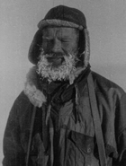

In 1947 Fuchs learned of the Falklands Islands Dependencies Survey - whose members were known as Fids - which then occupied seven bases in the Antarctic. The primary purpose was to strengthen Britain's claim to sovereignty. Fuchs applied for a position as Geologist, was interviewed and offered the job of overall Field Commander of all the Antarctic activities, based at Stonington Island on the Antarctic Peninsula.
Fuchs was one of 27 Fids to travel to the Antarctic in December 1947, and was given the freedom to plan the scientific programme for the duration of their stay. At Stonington, eleven men lived in cramped quarters and Fuchs quickly became the natural, as well as the appointed, leader of the group. Between 1948 and 1950 the men made a series of expeditions south from their base on the Peninsula.
The group had planned to have the use of an aircraft for their expeditions but some vital parts had been left behind and so all travel was by dog-sledging. Like the other new men Fuchs had to learn to drive a team; his lead dog was 'Darkie' with whom he developed a close rapport.
From October 1948 the Governor of the Falkland Islands, Sir Miles Clifford, took charge of the FIDS. In April 1949 the sea ice remained fast in Marguerite Bay and the relief ship John Biscoe could not reach Stonington, so the men were stuck for a further winter - for five of them this was their third consecutive winter. They became known as the 'Lost Eleven' and lasting bonds were formed. Despite the failure of the relief ship to deliver new supplies, Fuchs and his colleagues had a productive year, including a study of emperor penguins at a newly discovered colony.
In 1950 the sea ice cleared in early February and the ship was finally able to get through. Stonington Base was closed and all except 36 dogs had to be put down, because no more than this could be accommodated on board ship. The surviving dogs were dispersed to other bases - a team of nine returned to Britain and performed in the Festival of Britain, led by Darkie, who later went to live with Fuchs and became a familiar sight in Cambridge. Fuchs returned to the UK by sea via the Falkland Islands, the port of Santos in Brazil, Lisbon (Portugal) and finally to Southampton.